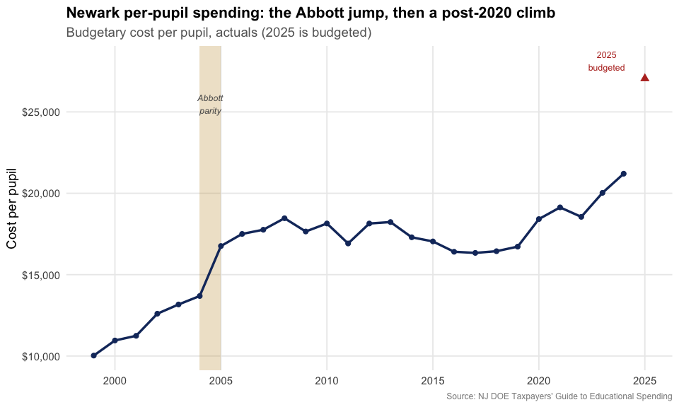
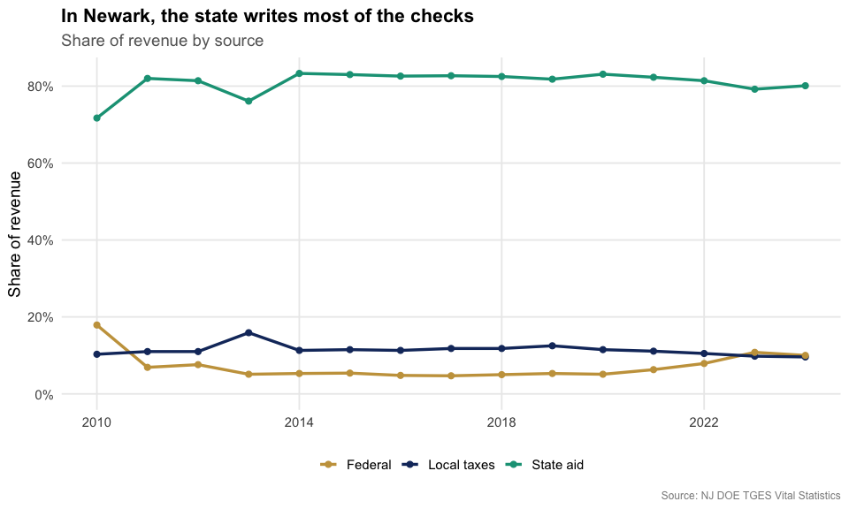
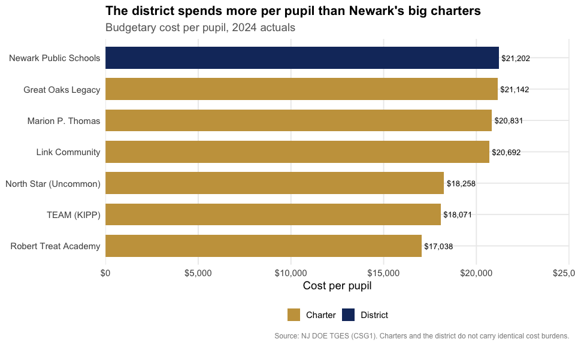
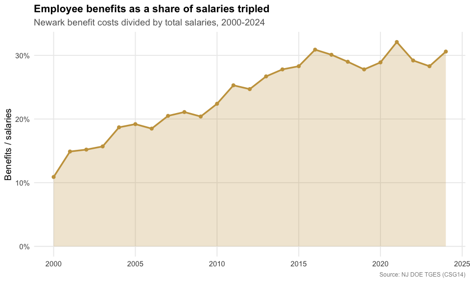
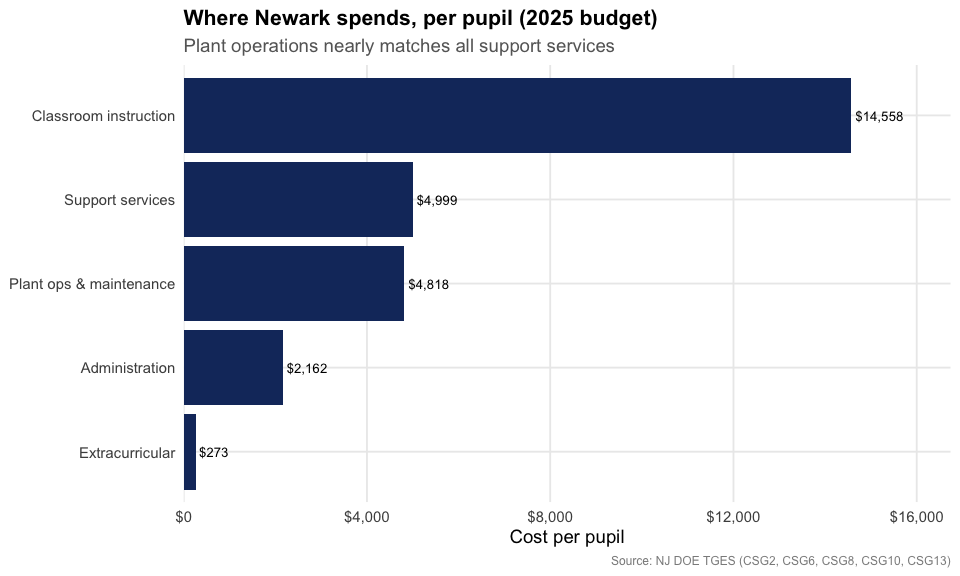
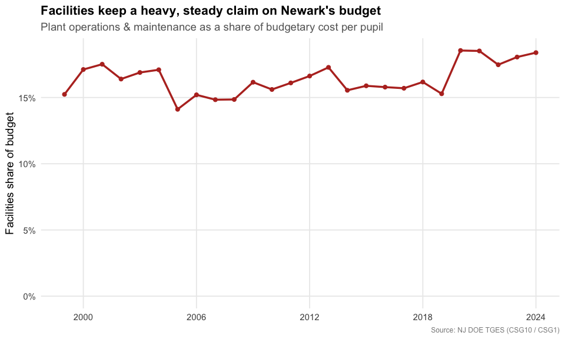
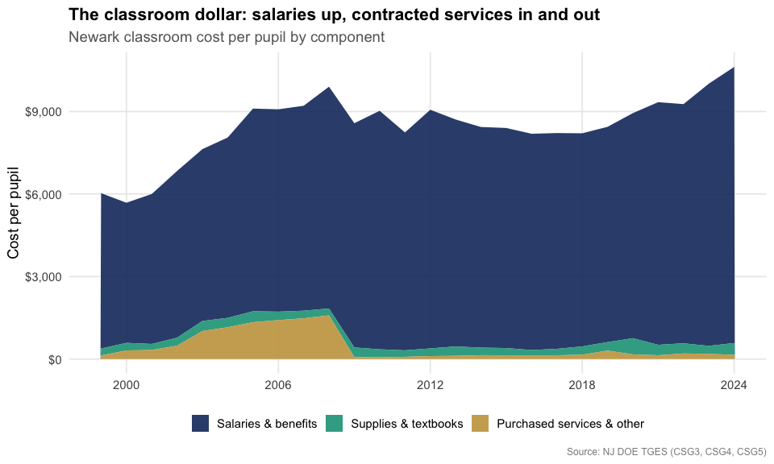
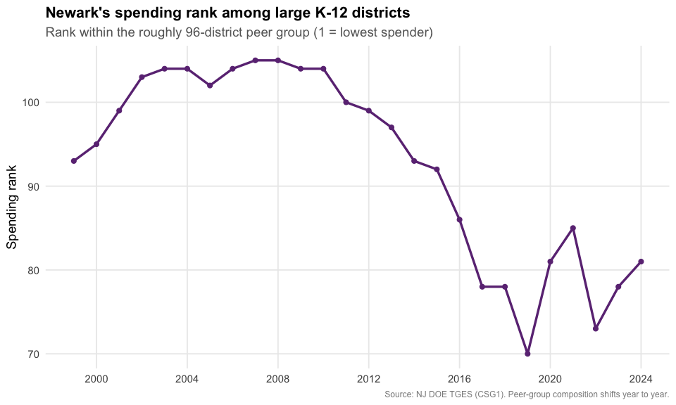
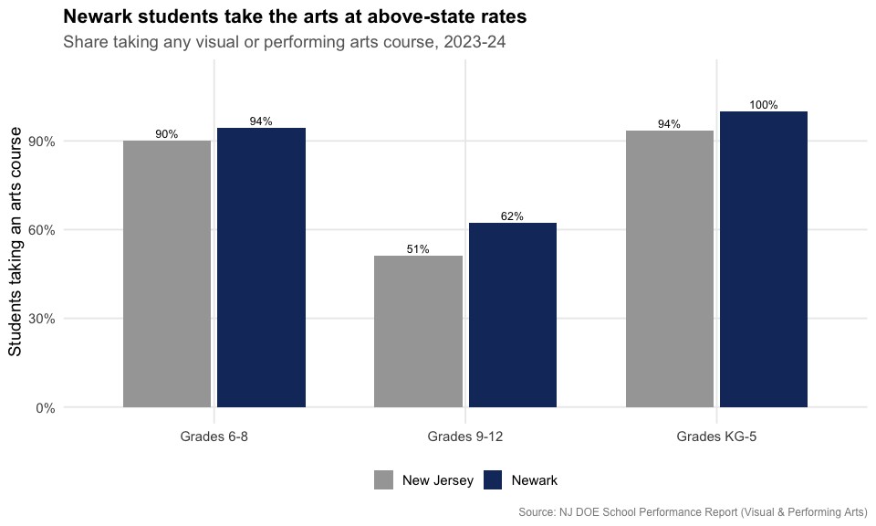
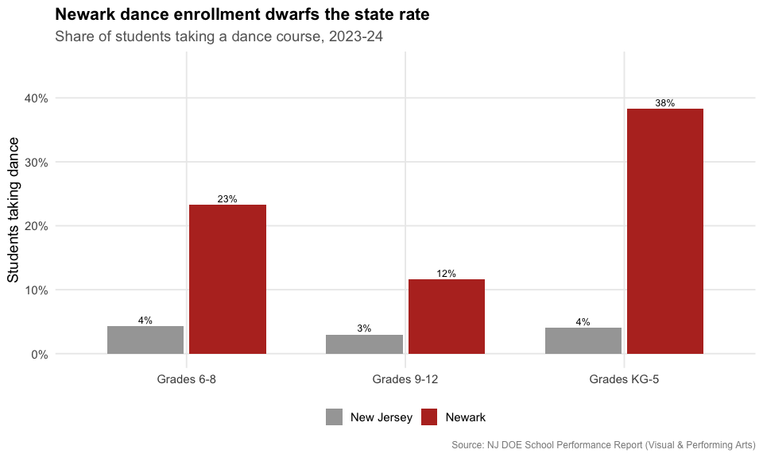

Following the Money: 25 Years of Spending in Newark
Source:vignettes/newark-school-spending.Rmd
newark-school-spending.Rmd
library(njschooldata)
library(ggplot2)
library(dplyr)
library(scales)
library(purrr)
library(tibble)
# The arts section reads a School Performance Report workbook (~100 MB), so give
# the download more than R's stingy 60-second default.
options(timeout = max(600, getOption("timeout")))
theme_nj <- function() {
theme_minimal(base_size = 14) +
theme(
plot.title = element_text(face = "bold", size = 16),
plot.subtitle = element_text(color = "gray40"),
plot.caption = element_text(color = "gray55", size = 9),
panel.grid.minor = element_blank(),
legend.position = "bottom"
)
}
nwk_navy <- "#16356B"
nwk_gold <- "#C8A14B"
nwk_teal <- "#16A085"
nwk_red <- "#B83227"
nwk_purple <- "#6C3483"The Taxpayers’ Guide to
Educational Spending (TGES) is the New Jersey Department of
Education’s annual report on what every district spends, broken down per
pupil into classroom instruction, support services, administration,
plant operations, and more. njschooldata pulls it straight
from the state for every year back to 2001 (the pre-2011 editions were
branded the “Comparative Spending Guide”).
This article follows one district, Newark, over a quarter century. Newark is the state’s largest school district, roughly 43,000 students and a budget near $1.5 billion. It is also one of the original Abbott v. Burke districts, where a decades-long school-funding lawsuit forced the state to pour money into New Jersey’s poorest cities, and it spent more than 20 years under state control before local control returned in 2018. The result is a spending story almost the mirror image of a wealthy suburb like South Orange-Maplewood: in Newark the state, not the local taxpayer, writes most of the checks.
fetch_tges(year) returns one tidy data frame per
spending indicator:
spending_2025 <- fetch_tges(2025)
# one tidy table per TGES indicator (CSG1 = total budgetary cost per pupil)
names(spending_2025)
#> [1] "CSG1" "CSG10" "CSG11"
#> [4] "CSG12" "CSG13" "CSG14"
#> [7] "CSG15" "CSG16" "CSG17"
#> [10] "CSG18" "CSG19" "CSG1AA_AVGS"
#> [13] "CSG2" "CSG20" "CSG21"
#> [16] "CSG3" "CSG4" "CSG5"
#> [19] "CSG6" "CSG7" "CSG8"
#> [22] "CSG8A" "CSG9" "SUMMARY"
#> [25] "SUMYR3" "SUMYR3C" "SUMYR4"
#> [28] "SUMYR4C" "SUMYR5" "SUMYR5C"
#> [31] "VITSTAT_TOTAL" "DETAIL_FY23" "DETAIL_FY24"
#> [34] "OCTOBER2024_DRTRS"Each table is district-level and long, with a three-year window per
report: two finalized Actuals years plus the current
Budgeted year. Newark is district code
3570.
spending_2025[["CSG1"]] %>%
filter(district_id == "3570") %>%
select(district_name, end_year, calc_type, `Per Pupil costs`, `District rank`)
#> # A tibble: 3 × 5
#> district_name end_year calc_type `Per Pupil costs` `District rank`
#> <chr> <dbl> <chr> <dbl> <int>
#> 1 Newark City 2023 Actuals 20026 78
#> 2 Newark City 2024 Actuals 21202 81
#> 3 Newark City 2025 Budgeted 27050 92
# Pull every published guide, 2001-2025. fetch_tges(2025) was already fetched
# above, so reuse it and download the rest. Drop (with a visible warning) any
# year that fails rather than letting one network hiccup kill the whole build.
reports <- list("2025" = spending_2025)
for (y in 2001:2024) {
reports[[as.character(y)]] <- tryCatch(
fetch_tges(y),
error = function(e) {
warning(paste("TGES", y, "failed:", conditionMessage(e)))
NULL
}
)
}
reports <- reports[!vapply(reports, is.null, logical(1))]
reports <- reports[order(as.integer(names(reports)))]
NEWARK <- "3570"
# Pull one Newark value column across every report and keep one row per school
# year. Each actual recurs in consecutive guides; we keep the most recent
# (most finalized) report's figure. VITSTAT/CSG16 carry no calc_type, so the
# calc filter is skipped for them.
nwk_series <- function(table, value_col, calc = "Actuals") {
map_dfr(names(reports), function(y) {
d <- reports[[y]][[table]]
if (is.null(d) || !value_col %in% names(d)) return(NULL)
r <- filter(d, !is.na(district_id), district_id == NEWARK)
if ("calc_type" %in% names(r)) r <- filter(r, calc_type == calc)
if (nrow(r) == 0) return(NULL)
tibble(report_year = as.integer(y), end_year = r$end_year, value = r[[value_col]])
}) %>%
group_by(end_year) %>%
slice_max(report_year, n = 1, with_ties = FALSE) %>%
ungroup() %>%
arrange(end_year)
}1. The Abbott surge, then a post-2020 climb
Newark’s actual budgetary cost per pupil sat near $10,000 at the turn of the century. Then it jumped: from $13,687 (2004) to $16,758 (2005), a 22% rise in a single year. That surge lines up with the Abbott v. Burke parity remedy, in which the state Supreme Court ordered New Jersey to fund its poorest districts at the level of its wealthiest. Spending then plateaued in the $16,000-$18,000 range for the entire 2010s before climbing again after 2020, to $21,202 in 2024. The 2025 budget pushes it to $27,050.
pp <- nwk_series("CSG1", "Per Pupil costs", "Actuals")
pp_budget_2025 <- nwk_series("CSG1", "Per Pupil costs", "Budgeted") %>%
filter(end_year == 2025)
stopifnot(nrow(pp) > 0, nrow(pp_budget_2025) == 1)
pp
#> # A tibble: 26 × 3
#> report_year end_year value
#> <int> <dbl> <dbl>
#> 1 2001 1999 10027
#> 2 2002 2000 10954
#> 3 2003 2001 11242
#> 4 2004 2002 12600
#> 5 2005 2003 13167
#> 6 2006 2004 13687
#> 7 2007 2005 16758
#> 8 2008 2006 17502
#> 9 2009 2007 17760
#> 10 2010 2008 18466
#> # ℹ 16 more rowsThe comparative “budgetary cost per pupil” above is the figure TGES uses to line districts up against each other; it excludes things like capital construction and debt service. Newark’s total expenditures run far higher, about $1.49 billion in 2024, or roughly $34,000 per pupil once every fund is counted.
reports[["2025"]][["CSG1AA_AVGS"]] %>%
filter(district_id == NEWARK, calc_type == "Actuals", end_year == 2024) %>%
transmute(end_year,
total_expenditures = `Total Expenditures, actual costs`,
enrollment = `Average Daily Enrollment plus Sent Pupils`,
per_pupil_all_funds = `Per Pupil Total Expenditures`)
#> # A tibble: 1 × 4
#> end_year total_expenditures enrollment per_pupil_all_funds
#> <dbl> <dbl> <dbl> <dbl>
#> 1 2024 1488209111 43251 34409
ggplot(pp, aes(end_year, value)) +
annotate("rect", xmin = 2004, xmax = 2005, ymin = -Inf, ymax = Inf,
fill = nwk_gold, alpha = 0.30) +
annotate("text", x = 2004.5, y = 25500, label = "Abbott\nparity",
color = "gray35", fontface = "italic", size = 3.3) +
geom_line(color = nwk_navy, linewidth = 1.2) +
geom_point(color = nwk_navy, size = 2) +
geom_point(data = pp_budget_2025, aes(end_year, value),
color = nwk_red, size = 3, shape = 17) +
annotate("text", x = 2023.2, y = pp_budget_2025$value + 1100,
label = "2025\nbudgeted", color = nwk_red, size = 3.3) +
scale_y_continuous(labels = dollar) +
scale_x_continuous(breaks = seq(2000, 2025, 5)) +
labs(title = "Newark per-pupil spending: the Abbott jump, then a post-2020 climb",
subtitle = "Budgetary cost per pupil, actuals (2025 is budgeted)",
x = NULL, y = "Cost per pupil",
caption = "Source: NJ DOE Taxpayers' Guide to Educational Spending") +
theme_nj()
2. The state pays the bill
This is the heart of Newark’s finances and the cleanest contrast with a property-tax suburb. In South Orange-Maplewood, local taxpayers fund about 70-85% of the budget. In Newark it is the reverse: state aid covers roughly 80% and the local property-tax share has never topped 16%, drifting down to under 10% by 2024. The federal line spikes in a crisis (the 2010 stimulus, the 2023 pandemic ESSER money) and recedes.
revenue <- bind_rows(
nwk_series("VITSTAT_TOTAL", "Revenue: Local %") %>% mutate(source = "Local taxes"),
nwk_series("VITSTAT_TOTAL", "Revenue: State %") %>% mutate(source = "State aid"),
nwk_series("VITSTAT_TOTAL", "Revenue: Federal %") %>% mutate(source = "Federal")
)
stopifnot(nrow(revenue) > 0)
revenue %>%
tidyr::pivot_wider(id_cols = end_year, names_from = source, values_from = value)
#> # A tibble: 15 × 4
#> end_year `Local taxes` `State aid` Federal
#> <dbl> <dbl> <dbl> <dbl>
#> 1 2010 0.103 0.717 0.179
#> 2 2011 0.11 0.82 0.069
#> 3 2012 0.11 0.814 0.076
#> 4 2013 0.159 0.761 0.051
#> 5 2014 0.113 0.833 0.053
#> 6 2015 0.115 0.83 0.054
#> 7 2016 0.113 0.826 0.048
#> 8 2017 0.118 0.827 0.047
#> 9 2018 0.118 0.825 0.05
#> 10 2019 0.125 0.818 0.053
#> 11 2020 0.115 0.831 0.051
#> 12 2021 0.111 0.823 0.063
#> 13 2022 0.105 0.814 0.079
#> 14 2023 0.098 0.792 0.108
#> 15 2024 0.096 0.801 0.1
ggplot(revenue, aes(end_year, value, color = source)) +
geom_line(linewidth = 1.2) +
geom_point(size = 2) +
scale_color_manual(values = c("Local taxes" = nwk_navy,
"State aid" = nwk_teal,
"Federal" = nwk_gold)) +
scale_y_continuous(labels = percent_format(accuracy = 1), limits = c(0, NA)) +
scale_x_continuous(breaks = seq(2010, 2024, 4)) +
labs(title = "In Newark, the state writes most of the checks",
subtitle = "Share of revenue by source",
x = NULL, y = "Share of revenue", color = NULL,
caption = "Source: NJ DOE TGES Vital Statistics") +
theme_nj()
3. Newark Public Schools outspends its charter rivals
Newark is one of the country’s most-watched charter battlegrounds, the city of Mark Zuckerberg’s $100 million gift and Dale Russakoff’s book The Prize. About a third of Newark’s public-school students now attend charters. TGES reports those charters as their own districts, so we can line them up against the district. The two largest networks, North Star Academy (Uncommon Schools) and TEAM Academy (KIPP), each spend close to $18,000 per pupil, below the district’s $21,202.
A caveat: the district and the charters do not carry identical cost burdens. Newark Public Schools provides district-wide transportation and absorbs many of the highest-cost special-education placements, expenses that never appear on a charter’s per-pupil line. The comparison is real, but it is not apples to apples.
# major Newark charter networks, selected by district code so the comparison is
# explicit and reproducible
nwk_charters <- tribble(
~code, ~name,
"7320", "North Star (Uncommon)",
"7325", "TEAM (KIPP)",
"6053", "Great Oaks Legacy",
"7210", "Marion P. Thomas",
"6099", "Link Community",
"7730", "Robert Treat Academy"
)
csg1_2024 <- reports[["2025"]][["CSG1"]] %>%
filter(calc_type == "Actuals", end_year == 2024)
charter_cmp <- bind_rows(
csg1_2024 %>% filter(district_id == NEWARK) %>%
transmute(name = "Newark Public Schools", per_pupil = `Per Pupil costs`,
kind = "District"),
csg1_2024 %>% filter(district_id %in% nwk_charters$code) %>%
left_join(nwk_charters, by = c("district_id" = "code")) %>%
transmute(name, per_pupil = `Per Pupil costs`, kind = "Charter")
)
stopifnot(nrow(charter_cmp) > 0, all(!is.na(charter_cmp$per_pupil)))
charter_cmp %>% arrange(desc(per_pupil))
#> # A tibble: 7 × 3
#> name per_pupil kind
#> <chr> <dbl> <chr>
#> 1 Newark Public Schools 21202 District
#> 2 Great Oaks Legacy 21142 Charter
#> 3 Marion P. Thomas 20831 Charter
#> 4 Link Community 20692 Charter
#> 5 North Star (Uncommon) 18258 Charter
#> 6 TEAM (KIPP) 18071 Charter
#> 7 Robert Treat Academy 17038 Charter
ggplot(charter_cmp, aes(reorder(name, per_pupil), per_pupil, fill = kind)) +
geom_col(width = 0.7) +
geom_text(aes(label = dollar(per_pupil)), hjust = -0.1, size = 3.5) +
coord_flip() +
scale_fill_manual(values = c("District" = nwk_navy, "Charter" = nwk_gold)) +
scale_y_continuous(labels = dollar, expand = expansion(mult = c(0, 0.18))) +
labs(title = "The district spends more per pupil than Newark's big charters",
subtitle = "Budgetary cost per pupil, 2024 actuals",
x = NULL, y = "Cost per pupil", fill = NULL,
caption = "Source: NJ DOE TGES (CSG1). Charters and the district do not carry identical cost burdens.") +
theme_nj()
4. Benefits ate the salary line
Here is the trend that drives every contentious school budget meeting: employee benefits as a share of salaries. In Newark it roughly tripled, from 10.9% in 2000 to 30.6% in 2024. Health-plan premiums are the main driver, and they keep climbing faster than pay, the same pressure squeezing districts statewide.
# the 1999 figure is a known decimal artifact in the early files; start at 2000
benefits <- nwk_series("CSG14", "% of Total Salaries", "Actuals") %>%
filter(end_year >= 2000)
stopifnot(nrow(benefits) > 0)
benefits
#> # A tibble: 25 × 3
#> report_year end_year value
#> <int> <dbl> <dbl>
#> 1 2002 2000 0.109
#> 2 2003 2001 0.149
#> 3 2004 2002 0.152
#> 4 2005 2003 0.157
#> 5 2006 2004 0.187
#> 6 2007 2005 0.192
#> 7 2008 2006 0.185
#> 8 2009 2007 0.205
#> 9 2010 2008 0.211
#> 10 2011 2009 0.204
#> # ℹ 15 more rows
ggplot(benefits, aes(end_year, value)) +
geom_area(fill = nwk_gold, alpha = 0.25) +
geom_line(color = nwk_gold, linewidth = 1.2) +
geom_point(color = nwk_gold, size = 2) +
scale_y_continuous(labels = percent_format(accuracy = 1),
limits = c(0, NA)) +
scale_x_continuous(breaks = seq(2000, 2025, 5)) +
labs(title = "Employee benefits as a share of salaries tripled",
subtitle = "Newark benefit costs divided by total salaries, 2000-2024",
x = NULL, y = "Benefits / salaries",
caption = "Source: NJ DOE TGES (CSG14)") +
theme_nj()
5. Where each dollar goes
TGES breaks the budgetary cost per pupil into its components. In the 2025 budget, classroom instruction is the biggest slice, but the striking number is plant operations: Newark budgets nearly as much to run and maintain its buildings ($4,818 per pupil) as it spends on all support services combined ($4,999), a footprint you rarely see in a younger suburban district.
category_tables <- tribble(
~category, ~table,
"Classroom instruction", "CSG2",
"Support services", "CSG6",
"Plant ops & maintenance", "CSG10",
"Administration", "CSG8",
"Extracurricular", "CSG13"
)
categories <- map_dfr(seq_len(nrow(category_tables)), function(i) {
d <- reports[["2025"]][[category_tables$table[i]]]
r <- filter(d, district_id == NEWARK, end_year == 2025)
tibble(category = category_tables$category[i],
per_pupil = r[["Per Pupil costs"]][1])
})
stopifnot(nrow(categories) > 0, all(!is.na(categories$per_pupil)))
categories %>% arrange(desc(per_pupil))
#> # A tibble: 5 × 2
#> category per_pupil
#> <chr> <dbl>
#> 1 Classroom instruction 14558
#> 2 Support services 4999
#> 3 Plant ops & maintenance 4818
#> 4 Administration 2162
#> 5 Extracurricular 273
ggplot(categories, aes(reorder(category, per_pupil), per_pupil)) +
geom_col(fill = nwk_navy) +
geom_text(aes(label = dollar(per_pupil)), hjust = -0.1, size = 3.5) +
coord_flip() +
scale_y_continuous(labels = dollar, expand = expansion(mult = c(0, 0.15))) +
labs(title = "Where Newark spends, per pupil (2025 budget)",
subtitle = "Plant operations nearly matches all support services",
x = NULL, y = "Cost per pupil",
caption = "Source: NJ DOE TGES (CSG2, CSG6, CSG8, CSG10, CSG13)") +
theme_nj()
6. Facilities: a heavy, growing line on aging buildings
In the wealthy suburbs, plant operations are a frozen line whose share of the budget shrinks over time. Newark is the opposite. Heating, cleaning, and repairing some of the oldest school buildings in the state cost $1,528 per pupil in 1999 and $3,899 by 2024, and the facilities share of the budget held between 15% and 19% the whole time, drifting up after 2020. (TGES tracks operating cost only; the separate state-funded SDA capital program that rebuilds Abbott-district schools is not in these numbers.)
facilities <- nwk_series("CSG10", "Per Pupil costs") %>%
select(end_year, facilities = value) %>%
inner_join(nwk_series("CSG1", "Per Pupil costs") %>% select(end_year, total = value),
by = "end_year") %>%
mutate(share = facilities / total)
stopifnot(nrow(facilities) > 0)
facilities
#> # A tibble: 26 × 4
#> end_year facilities total share
#> <dbl> <dbl> <dbl> <dbl>
#> 1 1999 1528 10027 0.152
#> 2 2000 1875 10954 0.171
#> 3 2001 1969 11242 0.175
#> 4 2002 2066 12600 0.164
#> 5 2003 2224 13167 0.169
#> 6 2004 2340 13687 0.171
#> 7 2005 2365 16758 0.141
#> 8 2006 2661 17502 0.152
#> 9 2007 2635 17760 0.148
#> 10 2008 2743 18466 0.149
#> # ℹ 16 more rows
ggplot(facilities, aes(end_year, share)) +
geom_line(color = nwk_red, linewidth = 1.2) +
geom_point(color = nwk_red, size = 2) +
scale_y_continuous(labels = percent_format(accuracy = 1), limits = c(0, NA)) +
scale_x_continuous(breaks = seq(2000, 2024, 6)) +
labs(title = "Facilities keep a heavy, steady claim on Newark's budget",
subtitle = "Plant operations & maintenance as a share of budgetary cost per pupil",
x = NULL, y = "Facilities share of budget",
caption = "Source: NJ DOE TGES (CSG10 / CSG1)") +
theme_nj()
7. A closer look at the classroom dollar
TGES splits classroom instruction into three pieces: salaries and benefits, supplies and textbooks, and “purchased services and other.” Salaries and benefits dominate and nearly doubled, from $5,095 per pupil in 2000 to $10,038 in 2024. Supplies and textbooks stayed frozen near $200-$400 the entire period, a deep real-terms cut. And purchased services, contracted and out-of-district instruction, tell the reverse of the suburban story: they ballooned to $1,589 per pupil in 2008, then collapsed back to $154 by 2024 as Newark brought services back in-house.
classroom_parts <- bind_rows(
nwk_series("CSG3", "Per Pupil costs") %>% mutate(part = "Salaries & benefits"),
nwk_series("CSG4", "Per Pupil costs") %>% mutate(part = "Supplies & textbooks"),
nwk_series("CSG5", "Per Pupil costs") %>% mutate(part = "Purchased services & other")
) %>%
mutate(part = factor(part, levels = c("Salaries & benefits",
"Supplies & textbooks",
"Purchased services & other")))
stopifnot(nrow(classroom_parts) > 0)
classroom_parts %>%
filter(end_year %in% c(2000, 2008, 2016, 2024)) %>%
select(end_year, part, value) %>%
arrange(end_year, part)
#> # A tibble: 12 × 3
#> end_year part value
#> <dbl> <fct> <dbl>
#> 1 2000 Salaries & benefits 5095
#> 2 2000 Supplies & textbooks 277
#> 3 2000 Purchased services & other 312
#> 4 2008 Salaries & benefits 8065
#> 5 2008 Supplies & textbooks 250
#> 6 2008 Purchased services & other 1589
#> 7 2016 Salaries & benefits 7864
#> 8 2016 Supplies & textbooks 191
#> 9 2016 Purchased services & other 137
#> 10 2024 Salaries & benefits 10038
#> 11 2024 Supplies & textbooks 430
#> 12 2024 Purchased services & other 154
ggplot(classroom_parts, aes(end_year, value, fill = part)) +
geom_area(alpha = 0.9) +
scale_fill_manual(values = c("Salaries & benefits" = nwk_navy,
"Supplies & textbooks" = nwk_teal,
"Purchased services & other" = nwk_gold)) +
scale_y_continuous(labels = dollar) +
scale_x_continuous(breaks = seq(2000, 2024, 6)) +
labs(title = "The classroom dollar: salaries up, contracted services in and out",
subtitle = "Newark classroom cost per pupil by component",
x = NULL, y = "Cost per pupil", fill = NULL,
caption = "Source: NJ DOE TGES (CSG3, CSG4, CSG5)") +
theme_nj()
8. From the top of the pack toward the middle
TGES ranks each district against its peer group. Newark sits with the large K-12 districts (3,500+ students). In this ranking, 1 = the lowest spender, so a higher number means spending more than peers. Through the Abbott years Newark was ranked 104th or 105th out of about 105 districts, essentially the highest-spending big district in the state. It has since slid toward the top quartile (rank in the 70s and 80s out of about 95) as its budget flattened in the recession years while other districts caught up and the 2018 funding formula redistributed aid.
rank <- nwk_series("CSG1", "District rank", "Actuals")
stopifnot(nrow(rank) > 0)
# size of the peer group in the most recent guide, for context
n_peers <- reports[["2025"]][["CSG1"]] %>%
filter(group == "G. K-12 / 3501 +", end_year == 2024,
!is.na(district_id), district_id != "00NA") %>%
distinct(district_id) %>%
nrow()
n_peers
#> [1] 97
rank
#> # A tibble: 26 × 3
#> report_year end_year value
#> <int> <dbl> <int>
#> 1 2001 1999 93
#> 2 2002 2000 95
#> 3 2003 2001 99
#> 4 2004 2002 103
#> 5 2005 2003 104
#> 6 2006 2004 104
#> 7 2007 2005 102
#> 8 2008 2006 104
#> 9 2009 2007 105
#> 10 2010 2008 105
#> # ℹ 16 more rows
ggplot(rank, aes(end_year, value)) +
geom_line(color = nwk_purple, linewidth = 1.2) +
geom_point(color = nwk_purple, size = 2) +
scale_x_continuous(breaks = seq(2000, 2024, 4)) +
labs(title = "Newark's spending rank among large K-12 districts",
subtitle = paste0("Rank within the roughly ", n_peers,
"-district peer group (1 = lowest spender)"),
x = NULL, y = "Spending rank",
caption = "Source: NJ DOE TGES (CSG1). Peer-group composition shifts year to year.") +
theme_nj()
9. What the spending buys: the arts
TGES tells you what a district spends; the School Performance Report
tells you what students actually take. Newark has a deep arts-education
tradition, home to the nation’s first public arts high school (Arts High
School, founded 1931) and the New Jersey Performing Arts Center.
fetch_arts_enrollment() pulls visual and performing arts
participation, and Newark runs ahead of the state at every grade band:
arts enrollment is effectively universal in its elementary schools.
arts_raw <- fetch_arts_enrollment(2024, level = "district") %>%
filter(district_id == "3570")
stopifnot(nrow(arts_raw) > 0)
arts_any <- arts_raw %>%
transmute(grades,
Newark = as.numeric(any_visual_perf_art_district),
`New Jersey` = as.numeric(any_visual_perf_art_state)) %>%
tidyr::pivot_longer(c(Newark, `New Jersey`), names_to = "geo", values_to = "pct")
stopifnot(nrow(arts_any) > 0)
arts_any
#> # A tibble: 6 × 3
#> grades geo pct
#> <chr> <chr> <dbl>
#> 1 Grades 6-8 Newark 94.4
#> 2 Grades 6-8 New Jersey 90
#> 3 Grades 9-12 Newark 62.2
#> 4 Grades 9-12 New Jersey 51.3
#> 5 Grades KG-5 Newark 100
#> 6 Grades KG-5 New Jersey 93.6
ggplot(arts_any, aes(grades, pct, fill = geo)) +
geom_col(position = position_dodge(width = 0.75), width = 0.7) +
geom_text(aes(label = paste0(round(pct), "%")),
position = position_dodge(width = 0.75), vjust = -0.4, size = 3.3) +
scale_fill_manual(values = c("Newark" = nwk_navy, "New Jersey" = "gray65")) +
scale_y_continuous(labels = percent_format(scale = 1), limits = c(0, 112)) +
labs(title = "Newark students take the arts at above-state rates",
subtitle = "Share taking any visual or performing arts course, 2023-24",
x = NULL, y = "Students taking an arts course", fill = NULL,
caption = "Source: NJ DOE School Performance Report (Visual & Performing Arts)") +
theme_nj()
The standout is dance. Across every grade band Newark enrolls students in dance at many times the state rate, peaking at 38% of elementary students against a statewide 4%, a legacy of the city’s performing-arts programs.
arts_dance <- arts_raw %>%
transmute(grades,
Newark = as.numeric(dance_district),
`New Jersey` = as.numeric(dance_state)) %>%
tidyr::pivot_longer(c(Newark, `New Jersey`), names_to = "geo", values_to = "pct")
stopifnot(nrow(arts_dance) > 0)
arts_dance
#> # A tibble: 6 × 3
#> grades geo pct
#> <chr> <chr> <dbl>
#> 1 Grades 6-8 Newark 23.3
#> 2 Grades 6-8 New Jersey 4.3
#> 3 Grades 9-12 Newark 11.6
#> 4 Grades 9-12 New Jersey 3
#> 5 Grades KG-5 Newark 38.3
#> 6 Grades KG-5 New Jersey 4.1
ggplot(arts_dance, aes(grades, pct, fill = geo)) +
geom_col(position = position_dodge(width = 0.75), width = 0.7) +
geom_text(aes(label = paste0(round(pct), "%")),
position = position_dodge(width = 0.75), vjust = -0.4, size = 3.3) +
scale_fill_manual(values = c("Newark" = nwk_red, "New Jersey" = "gray65")) +
scale_y_continuous(labels = percent_format(scale = 1), limits = c(0, 45)) +
labs(title = "Newark dance enrollment dwarfs the state rate",
subtitle = "Share of students taking a dance course, 2023-24",
x = NULL, y = "Students taking dance", fill = NULL,
caption = "Source: NJ DOE School Performance Report (Visual & Performing Arts)") +
theme_nj()
Reproduce this yourself
Every chart above comes from fetch_tges(). Once you have
a year’s tables (spending_2025 <- fetch_tges(2025)),
pulling Newark’s revenue mix is two lines:
spending_2025[["VITSTAT_TOTAL"]] %>%
filter(district_id == "3570") %>%
select(district_name, end_year, `Revenue: State %`, `Revenue: Local %`, `Revenue: Federal %`)
#> # A tibble: 1 × 5
#> district_name end_year `Revenue: State %` `Revenue: Local %`
#> <chr> <dbl> <dbl> <dbl>
#> 1 Newark City 2024 0.801 0.096
#> # ℹ 1 more variable: `Revenue: Federal %` <dbl>Swap the district code for any NJ district, or loop
fetch_many_tges(2001:2025) for the full history.
sessionInfo()
#> R version 4.6.0 (2026-04-24)
#> Platform: x86_64-pc-linux-gnu
#> Running under: Ubuntu 24.04.4 LTS
#>
#> Matrix products: default
#> BLAS: /usr/lib/x86_64-linux-gnu/openblas-pthread/libblas.so.3
#> LAPACK: /usr/lib/x86_64-linux-gnu/openblas-pthread/libopenblasp-r0.3.26.so; LAPACK version 3.12.0
#>
#> locale:
#> [1] LC_CTYPE=C.UTF-8 LC_NUMERIC=C LC_TIME=C.UTF-8
#> [4] LC_COLLATE=C.UTF-8 LC_MONETARY=C.UTF-8 LC_MESSAGES=C.UTF-8
#> [7] LC_PAPER=C.UTF-8 LC_NAME=C LC_ADDRESS=C
#> [10] LC_TELEPHONE=C LC_MEASUREMENT=C.UTF-8 LC_IDENTIFICATION=C
#>
#> time zone: UTC
#> tzcode source: system (glibc)
#>
#> attached base packages:
#> [1] stats graphics grDevices utils datasets methods base
#>
#> other attached packages:
#> [1] tibble_3.3.1 purrr_1.2.2 scales_1.4.0
#> [4] dplyr_1.2.1 ggplot2_4.0.3 njschooldata_0.9.16
#>
#> loaded via a namespace (and not attached):
#> [1] utf8_1.2.6 sass_0.4.10 generics_0.1.4 tidyr_1.3.2
#> [5] stringi_1.8.7 hms_1.1.4 digest_0.6.39 magrittr_2.0.5
#> [9] evaluate_1.0.5 grid_4.6.0 timechange_0.4.0 RColorBrewer_1.1-3
#> [13] fastmap_1.2.0 cellranger_1.1.0 jsonlite_2.0.0 codetools_0.2-20
#> [17] textshaping_1.0.5 jquerylib_0.1.4 cli_3.6.6 crayon_1.5.3
#> [21] rlang_1.2.0 bit64_4.8.2 withr_3.0.2 cachem_1.1.0
#> [25] yaml_2.3.12 parallel_4.6.0 downloader_0.4.1 tools_4.6.0
#> [29] tzdb_0.5.0 vctrs_0.7.3 R6_2.6.1 lifecycle_1.0.5
#> [33] lubridate_1.9.5 snakecase_0.11.1 stringr_1.6.0 bit_4.6.0
#> [37] fs_2.1.0 vroom_1.7.1 foreign_0.8-91 ragg_1.5.2
#> [41] janitor_2.2.1 pkgconfig_2.0.3 desc_1.4.3 pkgdown_2.2.0
#> [45] pillar_1.11.1 bslib_0.11.0 gtable_0.3.6 glue_1.8.1
#> [49] systemfonts_1.3.2 xfun_0.58 tidyselect_1.2.1 knitr_1.51
#> [53] farver_2.1.2 htmltools_0.5.9 labeling_0.4.3 rmarkdown_2.31
#> [57] readr_2.2.0 compiler_4.6.0 S7_0.2.2 readxl_1.5.0